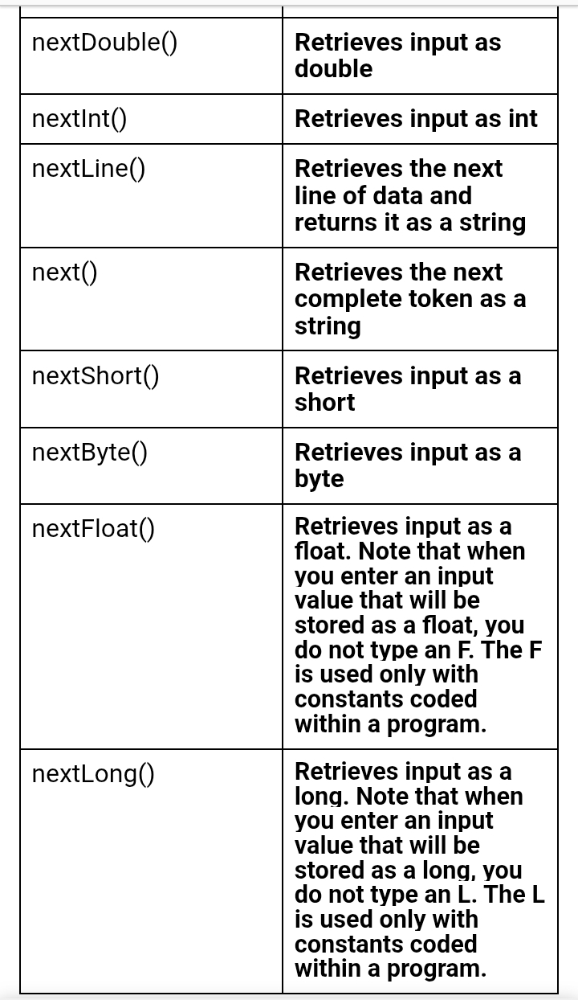
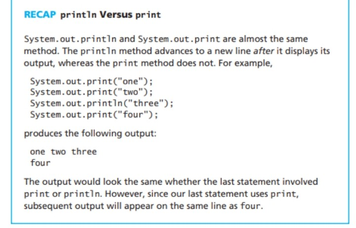
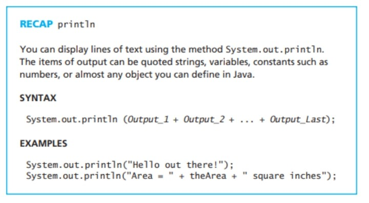
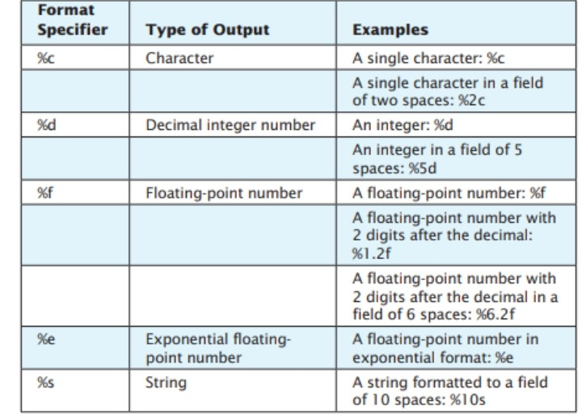

Module 1
Keyboard and Screen, I.O
SCANNER – a class in the java.util package. The method of this class are used to read
data from the standard
input device and store data into variables.
To use the method of Scanner in a computer program, first,
import the class using the following statements:
import java.util. Scanner // or java.util.*;
To create a Scanner object and connect it to the System.in object,
you write a statement similar to the following:
Scanner input = new Scanner(System.in);
The portion of the statement to the left of the assignment operator,
Scanner input declares an object of type Scanner.
The portion of the statement to the right of the assignment operator,
new Scanner(System.in), creates a Scanner
object that is connected to the System.in property. In other words,
the created Scanner object is connected to
the default input device. The keyword new is required by Java;
you will use it whenever you create objects that are more complex than the primitive data types.
The Scanner class contains methods that retrieve values from an input device.
Each retrieved value is a token,
which is a set of characters that is separated from the next set by whitespace.
TABLE 4.1 SCANNER CLASS METHODS

The Scanner class does not contain a nextChar() method.
To retrieve a single character from the keyboard, you
can use the nextLine() method and then use the charAt() method.
Screen Output


You can display lines of text using the method System.out.println.
The items of output can be quoted strings, variables, constants such as numbers,
or almost any object you can define in Jav
Formatted Output with printf (Optional)
Java includes a method named printf that can be used to give output in a specific format.
It is used in the same
manner as the printf function in the C programming language.
The method works like the print method except it
allows you to add formatting instructions that specify things such as the number of digits
to include after a
decimal point. For example, consider the following:
double score = 20.5;
System.out.println("Price using println:" + score);
System.out.printf("Price using printf formatting:%.2f", score);
This code outputs the following lines:
Price using println: 20.5
Price using printf formatting: 20.50
In this simple example, the first argument to printf is a string known as the format
specifier and the second
argument is the number or other value to be output in that format.
4.2 Selected Format Specifiers for System.out.printf
